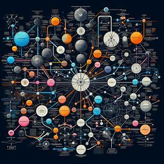
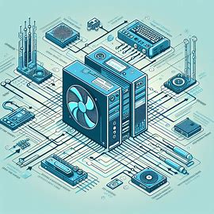
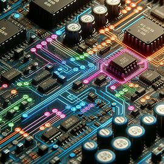
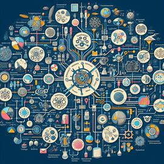
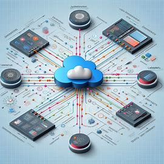

La Teoría General de Sistemas (TGS) es un enfoque de investigación que se basa en la observación global de todas las partes que componen el objeto de estudio. Esta teoría sostiene que un sistema no existe de forma aislada, sino que está en constante relación con otros sistemas, influyendo y siendo influenciado por su comportamiento.
El origen de la TGS se encuentra en la biología, y fue Ludwig von Bertalanffy en el siglo XX quien se dio cuenta de que para estudiar la vida y al ser humano era necesario abordar el estudio de manera integral, no solo enfocándose en partes aisladas del ser humano, como el sistema nervioso, locomotor, respiratorio, digestivo, etc., sino considerándolo como un todo.
La TGS no busca solo encontrar analogías entre las ciencias, sino también evitar la superficialidad científica que ha estancado a las ciencias. Utiliza modelos transferibles entre diferentes campos del conocimiento, siempre que dicha extrapolación sea posible e integrable a las respectivas disciplinas. A su vez introduce una semántica científica de utilización universal para facilitar proyectos interdisciplinarios, donde los participantes son especialistas de diferentes ramas de la ciencia y cada uno maneja una semántica diferente.
Un sistema, en este contexto, es un conjunto organizado de cosas o partes que interactúan e interdependen, formando un todo unitario y complejo. Las cosas o partes de un sistema se refieren más bien al aspecto funcional, y pueden ser categorizadas en entradas, procesos y salidas.
Elementos de un sistema

Los elementos de un sistema son fundamentales para entender cómo funciona y cómo se relacionan sus componentes. De manera extensa, estos elementos incluyen:
Componentes o Elementos: Son las partes o unidades que, al interactuar entre sí, forman el sistema completo. Cada componente tiene una función específica y es esencial para el funcionamiento del sistema. Por ejemplo, en un sistema informático, los componentes pueden ser el hardware y el software.
Relaciones: Las conexiones que existen entre los componentes de un sistema. Estas relaciones determinan cómo los componentes interactúan y trabajan juntos para lograr los objetivos del sistema. Pueden ser de naturaleza física, como cables en un sistema eléctrico, o abstracta, como la comunicación en un equipo de trabajo.
Estructura: La disposición o configuración de los componentes de un sistema. La estructura define cómo están organizados los elementos y cómo se relacionan entre sí. Esto puede incluir jerarquías, redes de comunicación y flujos de trabajo.
Entradas (Inputs): Los recursos que se introducen en el sistema para su procesamiento. Pueden ser materiales, energía o información. Por ejemplo, las materias primas en un proceso de fabricación o los datos en un sistema de información.
Procesos: Las actividades o operaciones que transforman las entradas en salidas. Los procesos utilizan los recursos y capacidades del sistema para producir resultados. En un sistema educativo, los procesos incluirían métodos de enseñanza y aprendizaje.
Salidas (Outputs): Los productos o resultados generados por el sistema después de procesar las entradas. Las salidas pueden ser bienes, servicios o información. Un ejemplo sería el diploma en un sistema educativo o el software desarrollado en un proyecto de TI.
Objetivos: Los fines o metas que el sistema busca alcanzar. Los objetivos guían el diseño y funcionamiento del sistema y pueden ser a corto, mediano o largo plazo. Por ejemplo, el objetivo de un sistema de salud podría ser mejorar la calidad de vida de la población.
Entorno (Environment): El contexto externo en el que opera el sistema. Incluye todos los factores externos que pueden influir en el sistema, como las condiciones económicas, sociales, políticas y naturales.
Límites: Las fronteras que definen lo que está dentro y fuera del sistema. Los límites pueden ser físicos, como las paredes de una fábrica, o conceptuales, como las leyes que rigen un sistema legal.
Retroalimentación (Feedback): La información que el sistema recibe sobre sus salidas y que puede usar para ajustar sus procesos y mejorar su desempeño.
Homeostasis: La capacidad de un sistema para mantener un estado de equilibrio interno a pesar de loscambios externos. Esto es esencial para la supervivencia y eficiencia de sistemas biológicos y sociales.
Sinergia: El fenómeno por el cual el sistema como un todo tiene propiedades y capacidades que no se encuentran en ninguno de los componentes individuales. La sinergia es lo que hace que el sistema sea más que la suma de sus partes.
Estos elementos son aplicables a una amplia variedad de sistemas, ya sean mecánicos, biológicos, sociales o conceptuales. La comprensión de estos elementos es crucial para el análisis y diseño de sistemas eficientes y efectivos.
Ejemplo: Ecosistema marino
Un ejemplo extenso de un sistema es el ecosistema marino. Este es un sistema complejo y dinámico que incluye una amplia variedad de componentes bióticos y abióticos que interactúan entre sí en un entorno acuático. Los elementos de este sistema incluyen:
Componentes Bióticos (Vivos):
Organismos Productores: Como las algas y el fitoplancton, que realizan la fotosíntesis y son la base de la cadena alimentaria.
Organismos Consumidores: Que se alimentan de los productores o de otros consumidores. Incluyen una amplia gama de especies, desde pequeños invertebrados hasta grandes peces y mamíferos marinos.
Organismos Descomponedores: Como las bacterias y los hongos, que descomponen la materia orgánica muerta, reciclando nutrientes esenciales en el ecosistema.
Componentes Abióticos (No Vivos):
Agua: el medio en el que viven los organismos, crucial para todas las funciones biológicas.
Luz Solar: fuente de energía para los productores que realizan la fotosíntesis.
Nutrientes: como el nitrógeno y el fósforo, que son esenciales para el crecimiento de los organismos.
Temperatura: que afecta los procesos metabólicos de los organismos y la distribución de las especies.
Relaciones y Procesos
Cadenas y Redes Alimentarias: que describen cómo la energía y los nutrientes fluyen a través de los diferentes niveles tróficos del ecosistema.
Ciclos Biogeoquímicos: como el ciclo del carbono y el ciclo del nitrógeno, que mueven los elementos a través de las partes bióticas y abióticas del ecosistema.
Simbiosis: relaciones mutuamente beneficiosas entre especies, como la que existe entre ciertos peces y corales.
Dinámicas del Sistema
Flujos de Energía: que mantienen el funcionamiento del ecosistema y permiten la vida delos organismos.
Ciclos de Materia: que aseguran la disponibilidad continua de recursos esenciales.
Equilibrio Ecológico: la capacidad del ecosistema para mantener su estructura y funciones a pesar de las perturbaciones externas.
Amenazas y Conservación
Contaminación: como los derrames de petróleo y los plásticos, que pueden dañar gravemente el ecosistema.
Sobrepesca: que puede alterar las redes alimentarias y reducir la biodiversidad.
Cambio Climático: que puede cambiar las condiciones del agua, afectando a todas las especies del ecosistema.
El ecosistema marino es un ejemplo de un sistema abierto, ya que intercambia materia y energía con su entorno. Es también un sistema dinámico, donde los cambios en un componente pueden tener efectos en cascada en todo el sistema. La comprensión de este sistema es vital para su conservación y para el mantenimiento de la biodiversidad y los servicios ecosistémicos que proporciona a la humanidad.
Componentes de un sistema

Los componentes de un sistema son las partes fundamentales que interactúan entre sí para que el sistema funcione de manera eficiente y efectiva. A continuación, te presento una descripción extensa de cada componente:
Entradas (Inputs): Las entradas son los recursos que se introducen en el sistema para su procesamiento. Pueden ser datos, información, energía o materiales que el sistema necesita para operar. Por ejemplo, en un sistema de producción, las entradas serían las materias primas.
Procesos: Los procesos son las actividades que transforman las entradas en salidas. Son el conjunto de operaciones que se llevan a cabo dentro del sistema y pueden ser físicos, químicos, mecánicos o intelectuales. En un sistema educativo, los procesos incluirían la enseñanza y el aprendizaje.
Salidas (Outputs): Las salidas son los productos o resultados finales del sistema después de que las entradas han sido procesadas. Pueden ser bienes, servicios, decisiones o cualquier otro resultado tangible o intangible. En un sistema informático, las salidas podrían ser los informes generados o las respuestas a consultas de usuarios.
Retroalimentación (Feedback): La retroalimentación es la información que el sistema recibe sobre su rendimiento y resultados. Es esencial para el control y la mejora continua del sistema, ya que permite ajustar los procesos y las entradas para alcanzar los objetivos deseados. Un ejemplo de retroalimentación es la evaluación de la satisfacción del cliente en un negocio.
Control: El control es el mecanismo que regula las actividades del sistema para asegurar que las salidas cumplan con los estándares o metas establecidas. Incluye la supervisión, la regulación y la dirección de los procesos. En un sistema de gestión de calidad, el control se realiza mediante auditorías y revisiones de procesos.
Entorno (Environment): El entorno es todo lo que está fuera del sistema y que puede afectarlo o ser afectado por él. Incluye factores externos como el mercado, la competencia, las regulaciones legales y las condiciones económicas. El sistema debe adaptarse y responder a los cambios en su entorno para sobrevivir y prosperar.
Objetivos: Los objetivos son las metas o propósitos para los cuales se ha diseñado el sistema. Proporcionan dirección y un punto de referencia para evaluar la efectividad del sistema. Los objetivos deben ser claros, medibles y alcanzables.
Límites (Boundaries): Los límites definen la extensión del sistema, separando los componentes internos de los factores externos del entorno. Establecen lo que está incluido en el sistema y lo que no.
Recursos: Los recursos son los activos que el sistema utiliza para realizar sus procesos. Pueden ser humanos, financieros, tecnológicos o naturales. La gestión eficiente de los recursos es crucial para la sostenibilidad del sistema.
Información: La información es el conocimiento que se utiliza para tomar decisiones dentro del sistema. Facilita la toma de decisiones y la comunicación dentro del sistema. En un sistema de información, la información es el producto principal que se ofrece a los usuarios.
Estos componentes trabajan juntos de manera coordinada para que el sistema funcione correctamente y alcance sus objetivos. La comprensión de estos componentes es vital para el análisis, diseño y mejora de cualquier sistema.
Subsistemas

La identificación de subsistemas es un aspecto crucial en el análisis de sistemas complejos. Un subsistema es un conjunto de elementos que, aunque opera dentro de un sistema más grande, puede considerarse un sistema en sí mismo debido a su funcionalidad específica y su contribución al objetivo general del sistema principal.
Definición de Subsistema
Un subsistema es una parte integral de un sistema más grande que tiene su propia funcionalidad y objetivos. Puede ser tan simple como un departamento dentro de una empresa o tan complejo como el sistema circulatorio dentro del cuerpo humano.
Proceso de Identificación
Reconocimiento del Sistema Principal: Comprender el sistema en su conjunto, incluyendo su propósito, funcionamiento y estructura.
Descomposición Funcional: Dividir el sistema en partes más pequeñas basadas en la funcionalidad o los procesos que realizan.
Análisis de Interacciones: Estudiar cómo las diferentes partes interactúan entre sí y con el entorno externo.
Definición de Límites: Establecer los límites claros de cada subsistema para entender dónde comienza y termina su influencia dentro del sistema principal.
Herramientas y Técnicas
Diagramas de Flujo de Datos: Para visualizar cómo los datos se mueven entre los subsistemas.
Diagramas de Paquetes (Subsistemas): Para representar la agrupación de componentes y sus relaciones.
Importancia dela Identificación
Simplificar el Análisis: Al trabajar con partes más pequeñas, se facilita la comprensión y el manejo del sistema.
Mejorar la Gestión: Los subsistemas pueden ser gestionados de manera más eficiente al tener objetivos y procesos más definidos.
Facilitar la Mantenibilidad: Los cambios y mejoras pueden implementarse en subsistemas específicos sin afectar al sistema principal.
Promover la Modularidad: Los subsistemas pueden diseñarse para ser independientes, lo que favorece la reutilización y la escalabilidad.
Ejemplo Práctico
En un sistema de gestión empresarial, los subsistemas podrían incluir el departamento de recursos humanos, el departamento financiero, el departamento de operaciones, etc. Cada uno de estos subsistemas manejaría sus propias tareas y tendría sus propios procesos, pero todos contribuirían al funcionamiento y éxito de la empresa como un todo.
La identificación de subsistemas es un proceso dinámico que debe adaptarse a medida que el sistema principal evoluciona. Es una práctica esencial en la ingeniería de sistemas, la gestión organizacional y otras áreas donde los sistemas complejos requieren un análisis detallado y una gestión efectiva.
Tipos de sistemas

Los tipos de sistemas se pueden clasificar ampliamente en dos categorías: sistemas reales o materiales y sistemas conceptuales o abstractos. Cada uno de estos tipos tiene características y ejemplos distintos que ayudan a comprender su naturaleza y funcionamiento.
Sistemas Reales o Materiales
Los sistemas reales o materiales están compuestos por elementos físicos y tangibles. Son sistemas que podemos observar, tocar o medir directamente. Estos sistemas interactúan con su entorno y entre sus componentes de manera física, intercambiando energía y materia.
Características:
Tangibilidad: Sus componentes tienen una presencia física y pueden ser percibidos por los sentidos.
Interacción: Los elementos interactúan entre sí de manera física, lo que afecta el funcionamiento del sistema.
Ubicación: Cada componente tiene una ubicación específica en el espacio y el tiempo.
Ejemplos:
El Sistema Solar: Compuesto por el Sol, planetas, lunas, asteroides y otros cuerpos celestes.
El Cuerpo Humano: Con sistemas como el circulatorio, respiratorio y digestivo, cada uno con funciones específicas.
Ecosistemas: Como un bosque o un arrecife de coral, donde organismos y elementos no vivos interactúan.
Sistemas Conceptuales o Abstractos
Los sistemas conceptuales o abstractos están formados por ideas, conceptos, teorías o símbolos. Noson tangibles ni físicos, pero tienen una estructura y funcionamiento que permite alcanzar objetivos específicos.
Características:
Intangibilidad: Sus componentes no son materiales, sino conceptuales.
Funcionalidad: Aunque no se pueden manipular físicamente, cada parte tiene una función que contribuye al sistema.
Organización: Los elementos deben estar ordenados para que el sistema pueda ser comprendido y funcione correctamente.
Ejemplos:
Sistemas Matemáticos: Como el álgebra o el cálculo, que utilizan símbolos y reglas para resolver problemas.
Idiomas: Sistemas de comunicación basados en símbolos y reglas gramaticales.
Sistemas Informáticos: Software y aplicaciones que utilizan líneas de código para realizar tareas.
Estas categorías son amplias y pueden subdividirse en más tipos específicos según diferentes criterios, como su propósito, su estructura o la forma en que interactúan con su entorno. Por ejemplo, dentro de los sistemas reales, podemos encontrar sistemas abiertos que intercambian materia y energía con su entorno, y sistemas cerrados que no tienen intercambio de materia, aunque pueden intercambiar energía. En los sistemas conceptuales, podemos diferenciar entre sistemas lógicos, sistemas de información, sistemas de creencias, entre otros.
La comprensión de los diferentes tipos de sistemas es fundamental para diversas disciplinas y aplicaciones, desde la ingeniería y la biología hasta la informática y la filosofía.
Características de los sistemas

Las características de los sistemas son propiedades fundamentales que definen su naturaleza y comportamiento. A continuación, te presento una descripción extensa de las características más relevantes de los sistemas:
Propósito u Objetivo: Todo sistema tiene un propósito o un objetivo que busca alcanzar. Este propósito guía la estructura y el funcionamiento del sistema, y es el resultado deseado que justifica la existencia del sistema.
Correlación e Interdependencia: Los elementos que componen un sistema están correlacionados y son interdependientes. Esto significa que cualquier cambio en un elemento puede afectar a otros elementos y, por lo tanto, al sistema en su conjunto.
Entropía: La entropía es una medida del desorden o la aleatoriedad dentro de un sistema. Según la Segunda Ley de la Termodinámica, la entropía de un sistema tiende a aumentar con el tiempo, lo que puede llevar a su desgaste o declive.
Homeostasis: La homeostasis se refiere a la capacidad de un sistema para mantener un estado de equilibrio interno a pesar de los cambios externos. Los sistemas buscan adaptarse para preservar su estabilidad y funcionamiento.
Estructura: La estructura de un sistema está determinada por la disposición y la relación entre sus elementos.La estructura define cómo están organizados los componentes y cómo interactúan entre sí.
Emergencia: La emergencia es la aparición de propiedades o comportamientos nuevos y complejos que no son predecibles a partir del conocimiento de los elementos individuales del sistema.
Comunicación: La comunicación es el proceso por el cual los elementos de un sistema intercambian información. Es esencial para la coordinación y el funcionamiento del sistema.
Sinergia: La sinergia ocurre cuando la interacción de los elementos del sistema produce un efecto total mayor que la suma de los efectos individuales.
Equifinalidad: La equifinalidad es la propiedad de los sistemas que les permite alcanzar el mismo estado final desde diferentes condiciones iniciales y de diferentes maneras.
Control: El control es el mecanismo que regula las actividades del sistema para asegurar que se alcancen los objetivos deseados. Incluye la supervisión y la corrección de las desviaciones.
Abierto o Cerrado: Los sistemas pueden ser abiertos o cerrados. Los sistemas abiertos intercambian materia y energía con su entorno, mientras que los sistemas cerrados no tienen intercambio de materia, aunque pueden intercambiar energía.
Subsistemas: Los sistemas suelen contener subsistemas, que son sistemas más pequeños dentro del sistema mayor. Cada subsistema tiene su propia función y contribuye al objetivo del sistema principal.
Estas características son aplicables a una amplia variedad de sistemas, ya sean físicos, biológicos, sociales o conceptuales. La comprensión de estas características es crucial para el análisis y diseño de sistemas eficientes y efectivos.